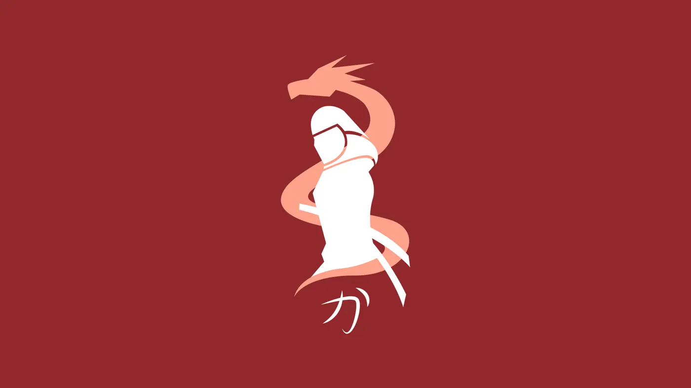
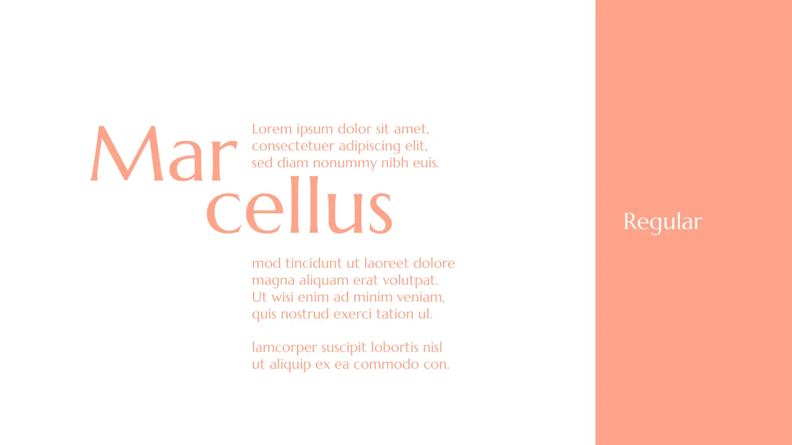
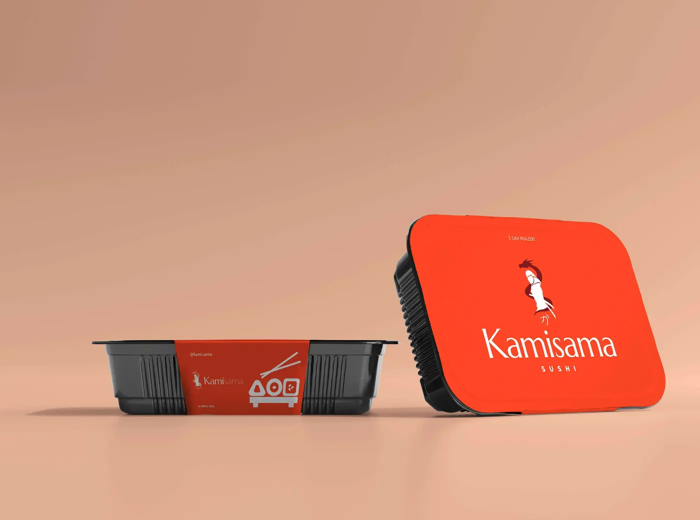
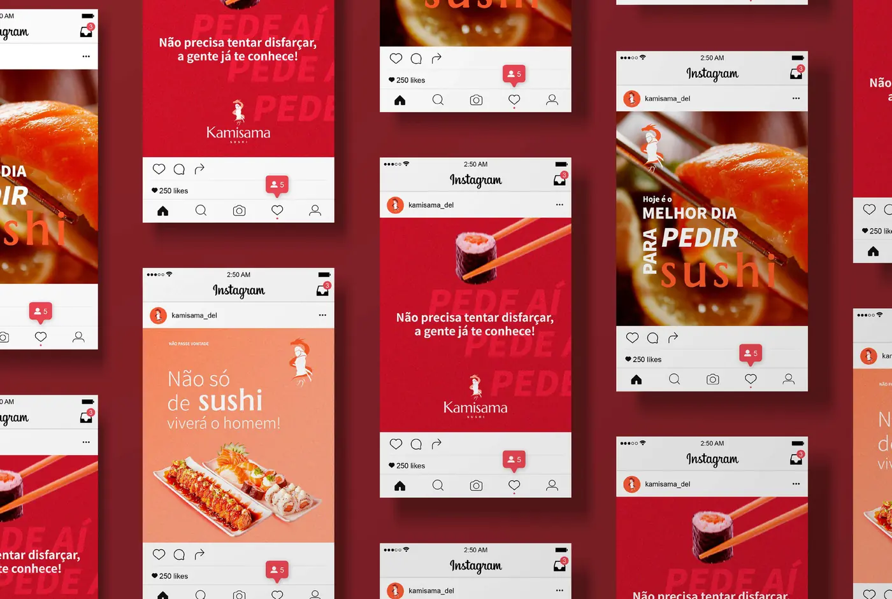
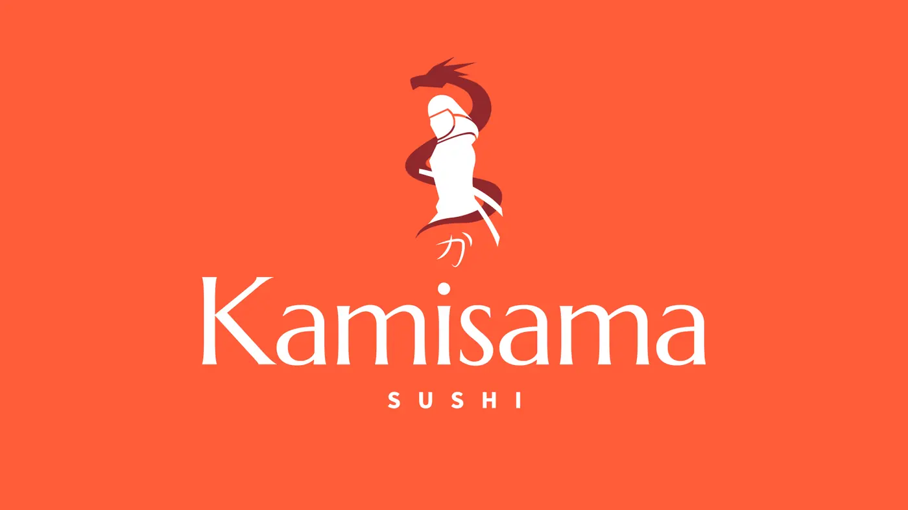
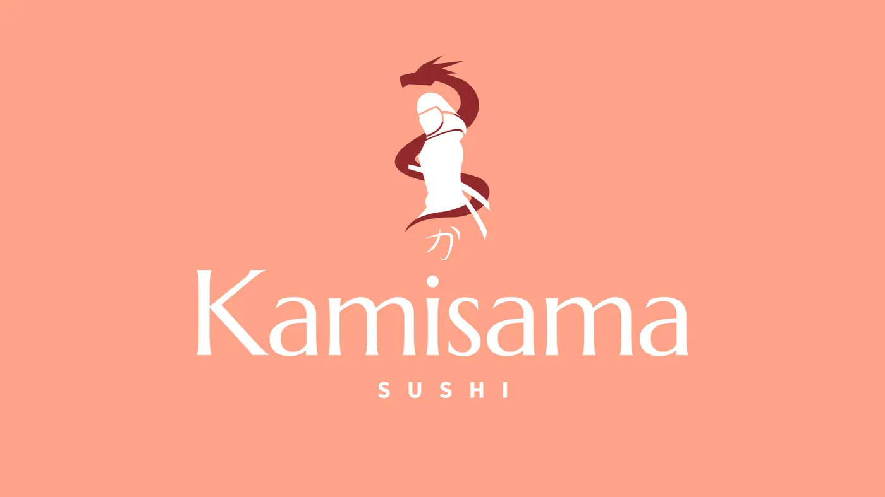
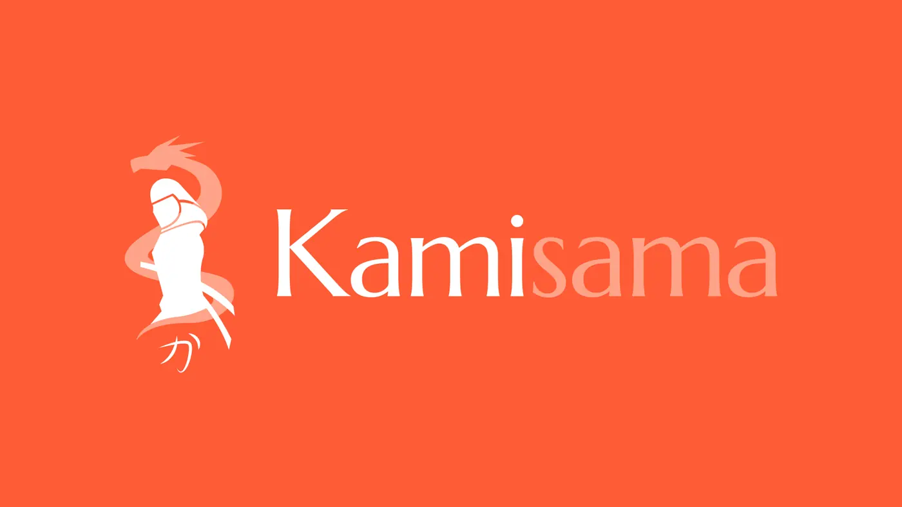
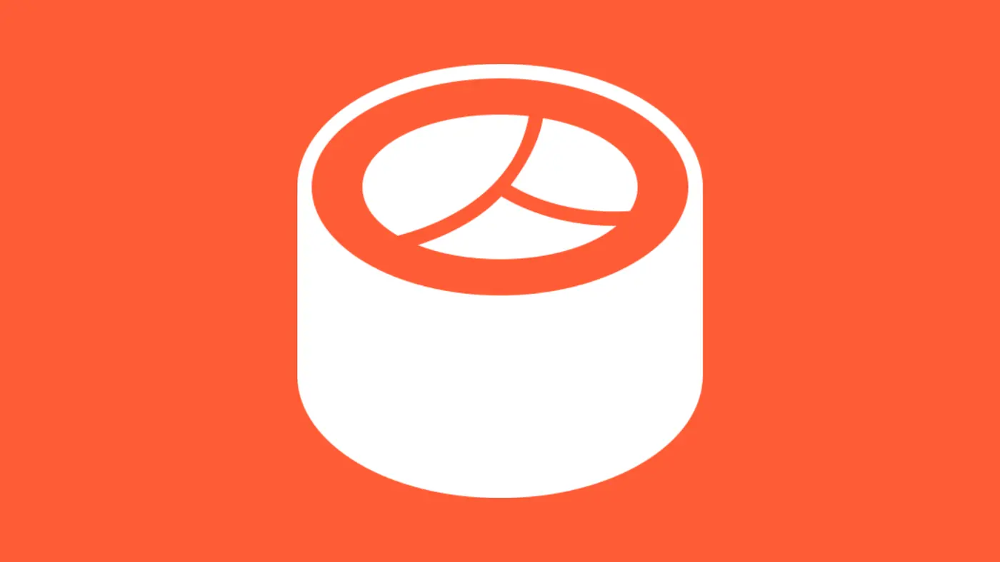

Este estudo apresenta a identidade visual da Kamisama, delivery de comida japonesa e yakisoba. O trabalho partiu de cinco problemas da empresa, organizados pelo método RACI de identidade. A tipografia elegante ficou responsável por fazer o delivery parecer restaurante; o símbolo, um guerreiro envolvido por um dragão, por fugir dos clichês do segmento; e as cores, tiradas dos próprios pratos, por abrir o apetite e marcar a embalagem.
Palavras-chave: identidade visual; gastronomia japonesa; delivery; método RACI; símbolo.
1Contexto
No delivery, o cliente escolhe o restaurante pelo aplicativo ou pelo Instagram, sem ver o salão nem o atendimento. A marca é o que sobra para dizer se a comida é boa.
O segmento japonês repete os mesmos recursos: hashi, ondas, sol vermelho e letras que imitam pincel. A Kamisama precisava de uma marca própria, com a elegância de um restaurante e energia para o feed.
2Base teórica
O Bruno Munari via o projeto como um jeito de organizar e simplificar: o problema já traz as peças, e o trabalho é tirar o que sobra (Munari, 1998). No símbolo da Kamisama foi literal: guerreiro e dragão desenhados só com formas chapadas, sem contorno e sem detalhe que não precisasse estar ali.
O Adrian Frutiger, que passou a vida estudando sinais, mostra que um símbolo funciona quando a gente reconhece a forma antes de entender o desenho (Frutiger, 1999). Por isso, além do símbolo completo, a marca ganhou ícones bem simples para o aplicativo, onde tudo aparece pequeno.
A matriz RACI, que organiza todo o resto, vem da gestão de projetos. No capítulo 4 eu conto como adaptei ela para o design.
3Problemas de design
Antes de desenhar, os problemas. Saíram da conversa com o cliente e da análise do segmento:
- P1Parecer restaurante, mesmo sendo deliveryO cliente julga a qualidade pela marca antes de provar a comida.
- P2Fugir dos clichês do segmentoHashi, onda e letra “oriental” se repetem em quase todo delivery japonês.
- P3Abrir o apetiteNo aplicativo e no feed, a marca precisa lembrar a comida.
- P4Ser reconhecida no aplicativoO logo aparece minúsculo na lista de restaurantes.
- P5Chegar bem na casa do clienteA embalagem é o único contato físico com a marca.
4Método RACI
O método RACI de identidade é meu, e parte de uma ideia simples: design existe pra resolver problema da empresa. Então cada elemento da identidade precisa ter uma função clara. Nada entra só pra enfeitar.
Na gestão de projetos, a matriz RACI cruza tarefas com pessoas e define quem executa, quem responde pelo resultado, quem é consultado e quem só é informado (PMI, 2017). No método, as tarefas viram os problemas da empresa e as pessoas viram os elementos da identidade: símbolo, tipografia, cor, grafismos, imagem, tom de voz e movimento.
O processo tem quatro passos:
- Levantar os problemas. Conversa com o cliente e análise do segmento pra listar o que a marca precisa resolver.
- Montar a matriz. Para cada problema, definir o papel de cada elemento com as letras abaixo.
- Desenhar. Cada elemento é criado a partir das responsabilidades que recebeu na matriz.
- Conferir. No fim, cada problema é revisto: o elemento que responde por ele fez a parte dele?
Responde
O elemento principal pra resolver o problema. Só um por problema.
Resolve junto
Elementos que trabalham junto no problema.
Apoia
Reforçam o trabalho, mas não carregam o problema.
Acompanha
Não atuam no problema, mas ficam coerentes com o resto.
5Matriz da identidade
A matriz mostra o papel de cada elemento em cada problema. Cada elemento foi desenhado a partir dela.
| Problema | Símbolo | Tipografia | Cor | Grafismos | Imagem | Tom de voz | Movimento |
|---|---|---|---|---|---|---|---|
| P1Parecer restaurante, mesmo sendo delivery | R | A | C | I | R | C | I |
| P2Fugir dos clichês do segmento | A | R | C | C | I | C | I |
| P3Abrir o apetite | I | I | R | C | A | C | C |
| P4Ser reconhecida no aplicativo | R | C | R | A | I | I | I |
| P5Chegar bem na casa do cliente | R | C | A | C | I | R | I |
6Mapa da marca
Força e sabor
7Símbolo
O símbolo é um guerreiro envolvido por um dragão. O guerreiro traz confiança e a essência de força que a marca quer passar; o dragão, que gira em volta dele, dá movimento e energia. Embaixo, um caractere japonês fecha o desenho e liga o símbolo à cultura do cardápio.
O desenho usa só formas chapadas, sem contorno, o que mantém o visual minimalista mesmo com uma figura detalhada.
- Silhueta. O guerreiro é uma silhueta vertical, construída sobre um eixo central.
- Espiral. O dragão nasce acima da cabeça e desce em espiral em volta do corpo.
- Contraste. Figura e dragão em cores diferentes, para ler bem mesmo pequeno.
- Assinatura. O caractere japonês embaixo fecha a composição.

Esboço geométrico feito para explicar a construção. A arte final está nos arquivos da marca.
8Tipografia
A tipografia é a principal responsável por fazer o delivery parecer restaurante (P1). A Marcellus, uma serifa de inspiração clássica, dá elegância ao nome; a Noto Sans JP, desenhada para o japonês, organiza cardápio e posts com clareza.

- Logotipo
- Marcellus: serifa elegante e de contraste suave. Na versão horizontal, o “sama” vem em tom mais claro.
- Descritor
- “SUSHI” em caixa alta e bem espaçado, embaixo do nome.
- Apoio
- Noto Sans JP, do Thin ao Black, para cardápio, preços e posts.
9Cor
A cor responde por levar a marca até a casa do cliente (P5) e ajuda a abrir o apetite (P3). Laranja, vinho e salmão vêm dos próprios pratos; Heller (2013) liga o vermelho e o laranja ao apetite e à energia.
Proporção de uso sugerida:
Códigos HEX medidos nas peças. Confira os Pantone em um guia físico antes de imprimir.
10Grafismos e imagem
Ícones chapados de cantos redondos (sushi, cardápio, play e balão de conversa) servem de atalho nas redes e no aplicativo, onde o símbolo completo ficaria pequeno demais (P4).
Fotos de comida de perto, com luz quente, e de pessoas comendo juntas. Elas abrem o apetite (P3) e mostram a experiência de restaurante.
11Tom de voz e movimento
Confiante e bem-humorado: “Não precisa tentar disfarçar, a gente já te conhece!” e “Pede aí”. Frases curtas que puxam o pedido e levam a marca até a embalagem (P5).
Proposto para os vídeos: o dragão girando em volta do guerreiro na abertura, num movimento rápido.
12Aplicações






14Resultados
De volta à matriz: cada problema conferido pelo elemento que responde por ele.
15Considerações finais
A Kamisama mostra que um delivery pode ter a presença de um restaurante quando cada elemento da marca tem uma função clara. Os próximos passos são aplicar o sistema no cardápio digital e produzir fotografia própria dos pratos.
Referências
- FRUTIGER, Adrian. Sinais e símbolos: desenho, projeto e significado. São Paulo: Martins Fontes, 1999.
- HELLER, Eva. A psicologia das cores: como as cores afetam a emoção e a razão. São Paulo: Gustavo Gili, 2013.
- MUNARI, Bruno. Das coisas nascem coisas. São Paulo: Martins Fontes, 1998.
- PROJECT MANAGEMENT INSTITUTE. Um guia do conhecimento em gerenciamento de projetos (Guia PMBOK). 6. ed. Newtown Square: PMI, 2017.